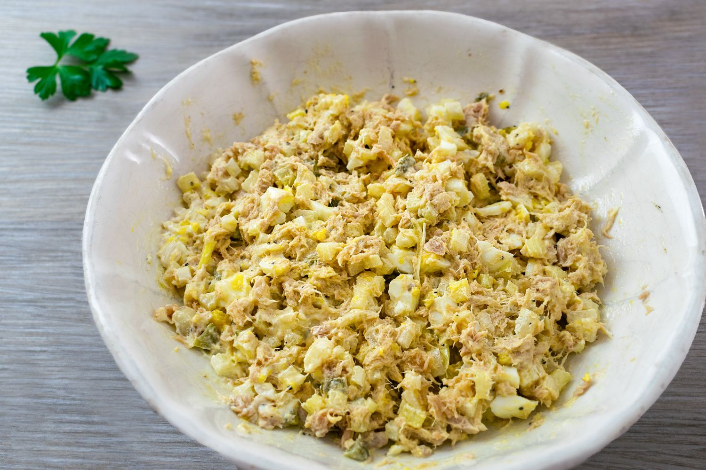

Tuna Salad Recipe

tuna salad the negro version
When I was a kid, I remember seeing my granny making her tuna salad
and me looking at her in digust as she put it in her mouth to taste.
I was a very picky eater so everything that my granny ate was nasty to me
before I even try it.
I got to the age of 25 when I actually tried tuna salad. I did one of those
squidward bites, and just like squidward, I loved it. I learned how to make her
recipe and ever since it has been one of my favorite sides to make.
So I bring forth to you my tuna salad and a few other recipes that I have perfected
and you will enjoy.
Here's the list of ingredients I use
I am a bit extra with my ingredients, I let my ancestors tell me when I have enough
so use as much or little as you want
- 16 oz elbow macaroni noodles
- 2-3 small cans of tuna
- 4-6 hard boiled eggs
- 3-5 tablespoons of pickle relish. I buy sweet salad cubes
- 2 tablespoons of mayo (your choice brand I prefer dukes)
- 1 tablespoon of mustard
- salt and pepper
- I put garlic powder and paprika as well but it is entirely optional what other seasonings you use
Steps to creating this wonderful tuna salad
- boil the macaroni noodles in a large pot of water until they are soft enough to your liking
- While the macaroni is boiling, boil the eggs. According to google, it takes around 6-12 minutes to boil that many eggs
- When the noodles are done, strain them and put them in a large bowl or container and let it cool for a few minutes
- Peel the hard boiled eggs and cut them in small cubes. The size depends on how big you cut them to your liking
- Add all the other ingredients to the container and stir it all together.
- Put in the refigerator for at least 30 minutes to cool and serve.